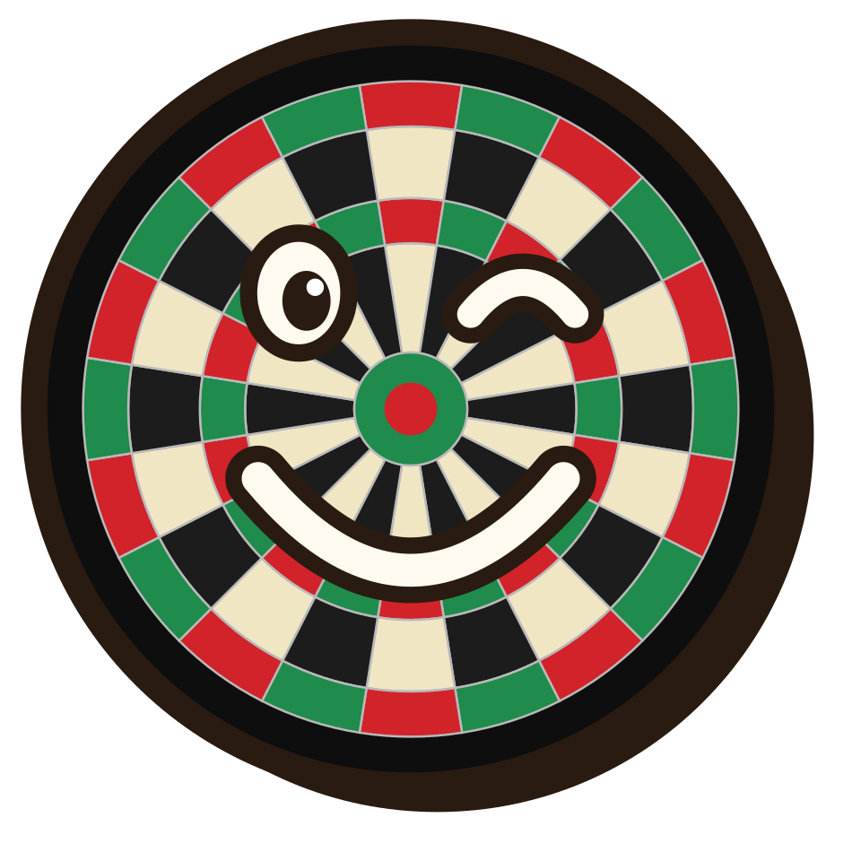
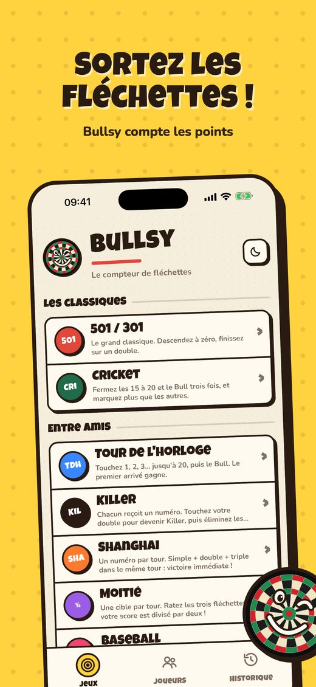
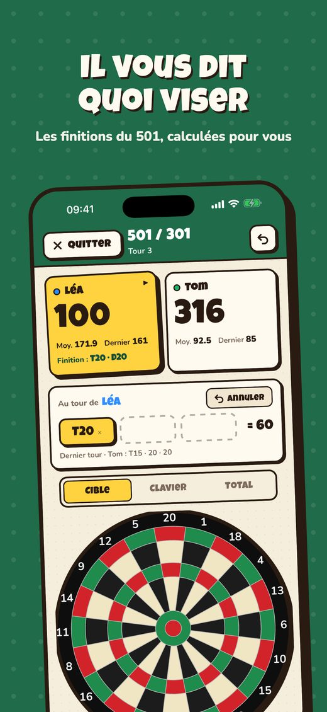
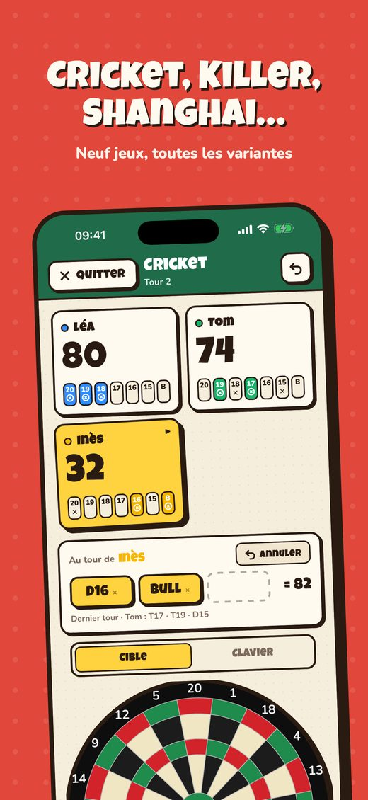
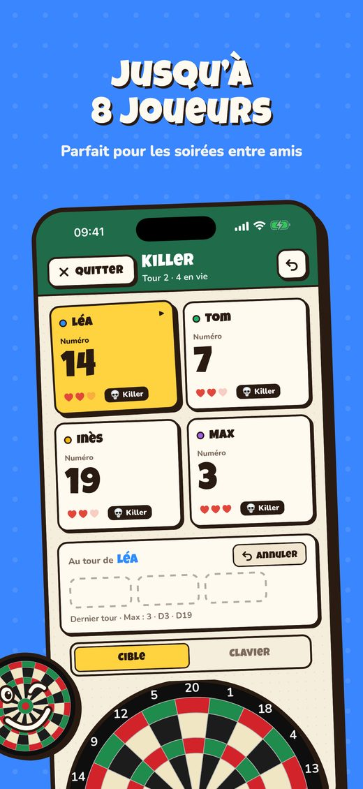
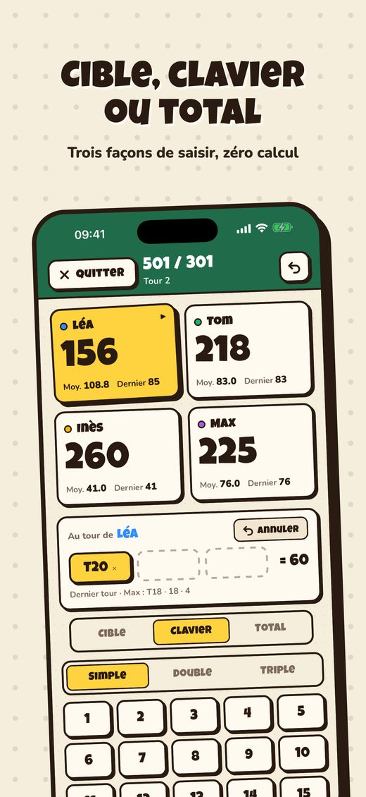
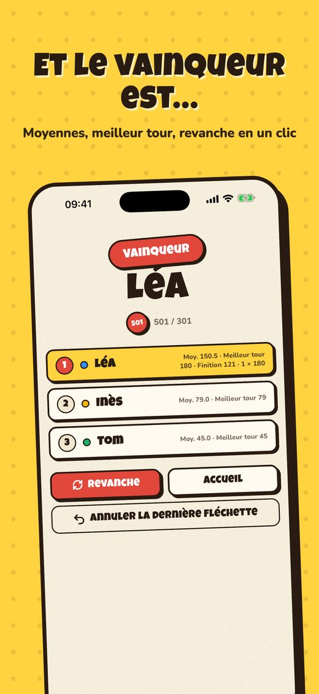
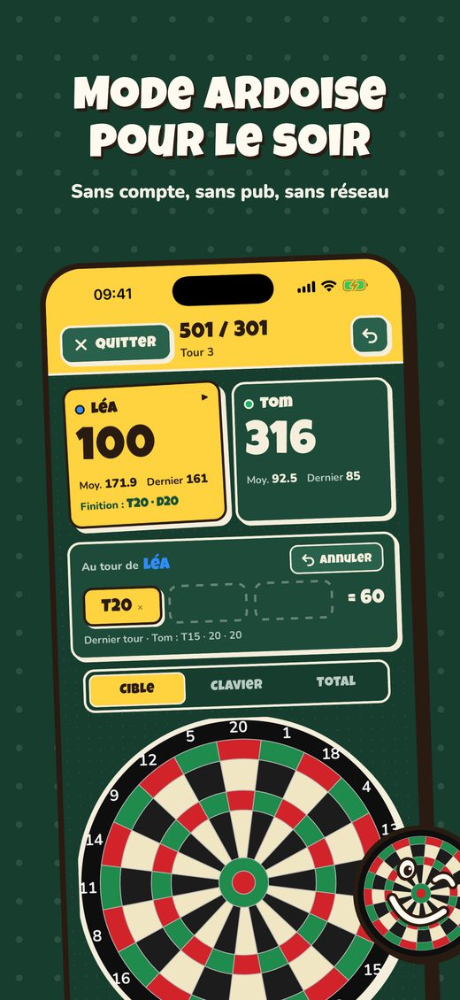

Bullsy
Le compteur de fléchettes simple et sympa.
Bientôt sur l'App Store







Sortez les fléchettes, Bullsy compte
Touchez sur la cible à l'écran la case où votre fléchette s'est plantée. Bullsy fait les calculs, annonce les finitions et garde le score de tout le monde.
Neuf jeux inclus
- 501, 301, 701 et 1001, avec double out, double in et manches
- Cricket, standard ou cut-throat
- Tour de l'horloge, Killer, Shanghai, Moitié
- Bob's 27, Compteur, Baseball
Pensé pour la vraie vie
- Trois façons de saisir : cible tactile, clavier, ou total du tour
- Une erreur ? Annulez d'un geste
- Partie sauvegardée automatiquement, jusqu'à 8 joueurs
- Aucun compte, aucune publicité, fonctionne sans connexion